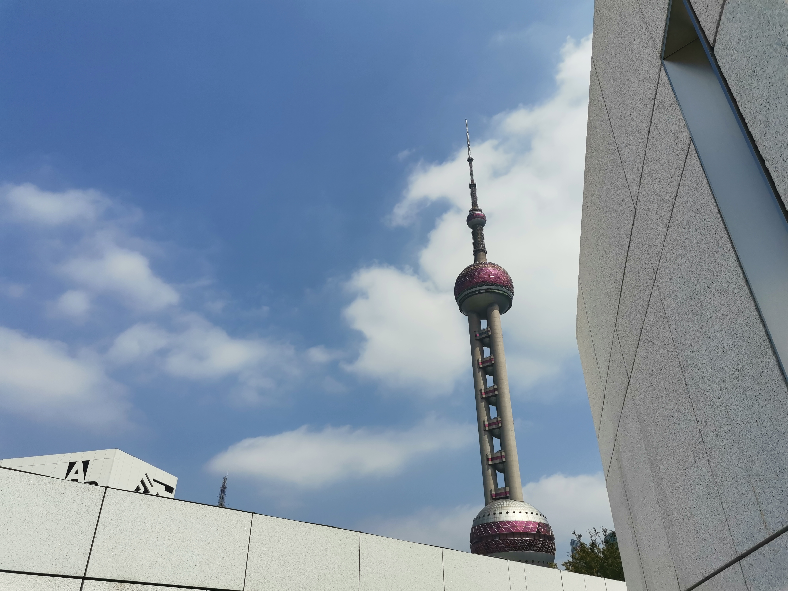

被关在楼里两周了 目前还不知道啥时候能出去 刚好之前的照片还没来得及整理 遂来补上一下 顺便回忆一下美好过去（
只能说 感觉蛮多当时的感想可能已经忘差不多了 随缘回忆
9：00 A.M.
有了十五号线真的方便好多 谢谢你上海地铁
虽然还是坐了一个多小时 但是已经很感动了（
在浦东美术馆还没修好的时候就看到了消息 之后一直在期待 赶快抓住开学前的尾巴进行一个rush
不过这次依旧是孤独传说 只能说 想要抓到一个倒霉蛋和jjpd一起逛美术馆太难了
看名字就知道地理位置有多好了 总之就在外滩边上 出站后走过去会经过东方明珠之类的 看到了超多人 我：嘿嘿 润咯（
不过事实上馆内人也蛮多的 毕竟感觉宣发（？）力度还蛮大 开馆之前就在首页刷到了好几次
进去之后本来是想从一楼开始逛 但是人实在太多了 就先上去看了其他的 所以路线还蛮混乱的（
anyway 速速进入正题
10：30 A.M.
看展览预告的时候看到蔡国强的名字就眼睛放光了 只能说上次在西岸看的那个作品真的给我印象很深 甚至我是在那之后才知道“欸什么奥运会的烟火也是你整的吗（” 怎么说 打扰了
然后看了这个展览才意识到 草 原来这才是你老本行 震撼了
只能说 好不一样啊！而且就 怎么能把烟花玩出这么多花样
nb 只能说nb
首先是这个吧，虽然有一系列作品都是这种正反对比但最喜欢的还是这副
第一眼莫名联想：zag是你吗zag（？
清晰人像的那侧就是一种非常华美张扬的感觉 很有宴会的味道 因为上面那个莫名联想于是一起想起了hades最后大家一起喝酒聚会的场景
模糊的那一侧就感觉氛围突然变得迷幻起来 还有种莫名的空虚 就感觉 人 在这个世界上 其实最后 能留下的 也就是这么 一团团模糊的 痕迹 甚至可能连这种痕迹都留不下来
就 不知道因何而来的 奇怪感慨
然后这张小幅作品我也很喜欢 虽然手机拉胯没拍出来 但是火药那种blingbling的质感搭配蓝色系真的很好看！！！爆破的纹路也很美丽，让人想起银河
顺便把另外几张小幅作品也一起讲了 我真的 好喜欢 右边的三幅人像（我说是就是
尤其是底下的两张 银灰色的模糊轮廓 真的是有种 飘渺的朦胧美（开始抽象
很像那种 一阵风刮过女主身影逐渐消逝的动画分镜（在说什么
然后 中间那幅黑色的画 好美丽……漆黑中的一点微光 不知道为什么想起了魂（？
只能说 怎么做到把火药玩出这么多花样的（二度
然后就拐进了另一个非常空旷的展厅，看到了全展我最喜欢最被震撼到的一件作品
无论是作品本身还是这个名字都给我当头来了一下 一种很难形容的空虚和沉重穿过厚重的棕黄向我袭来
无法避免地回忆起《三体》里各种关于文明消亡的场景
这并不是真实的感受（虽然如果放大尺度来看好像确实是这样？） 但我当时脑海中还是浮现出了“我漂浮在漆黑的宇宙中”这种想法
火药特有的斑驳质感和这个主题真的很契合
太酷了
从展厅出来之后顺便拐到了靠江边的连廊 好像叫镜厅吗还是什么 风景蛮好 感觉有成为打卡点的潜力（
11：00 A.M.
看到楼下人少了点就马上跑下去了 印象里泰特美术馆这个展在宣传里也是一直占大头 很期待了
不过当时宣传里一直提到的《奥菲莉娅》 怎么说 我其实没有很关注（……） 可能和我没看过麦克白以及其实并没有构图理论知识基础有很大关系（……
不过我觉得逛展就是突出一个自己开心就好 所以虽然错过了但也没有很遗憾吧
到展厅门口的时候读了一下介绍，看到说里面展品就是各种以光影为核心，我：好 让我学学（开始了
事实证明确实看到了很多有意思的东西
有一片展区放的都是透纳的各种透视光影教学图 只能说 进行一个偷学（
但我真的很喜欢那种大块阴影打光分界很硬（？）的场景 就很利落很酷（开始抽象
然后看到了这样一面墙 怎么说 虽然完全无关但我第一眼：草 闪灵（
印象过于深刻了（
然后就是看到了这么一个一直在转动的像教具一样的装置（）
光影的变换真的很迷人 就连两个玻璃球都可以让我看很久（
然后这幅画真的很有冲击力 无论是从色彩还是场面上都让人感受到了浓浓的悲剧感 感觉站在画布前空气都变粘稠沉重了
接下来隆重介绍全场我最喜欢的作品！！（呱唧呱唧

看到的第一眼就全身心都被击中了，水面与云层的光影细节描绘得也太细致了越看越想不通究竟是怎么做到的……太强了吧……丁达尔效应真的好美……就 怎么说 站在这幅画面前我感觉真的看到了那篇阳光下波光粼粼的海一样 感觉模糊的光柱也一起打在了我身上
真的是屏住呼吸了 怎么能 画得 这么好 没有词语能够形容我站在实物面前的感受

顺便这幅作品的布景我觉得很酷！看到的时候刚好前面都没人于是第一反应“欸什么为了呼应画面特意做了一个窗框然后打光吗这么细的吗好高级” 结果走近一看发现完全被骗到了（
但还是好酷啊！好喜欢
最后提一嘴出了展厅之后在附近看到的一个装置（一开始还以为只是单纯的闲置物品……翻照片才发现拍到了介绍的一角dbq） 当时觉得和主题蛮契合就拍下来了
人果然也是一种趋光生物呢（感叹
11：40 A.M.
之后去逛了胡安的展 是抽象但是又能感受到浓烈情感色彩的风格 比其那种把情感叙述给观众的作品更像是龙语一样直接传到脑中（唐突ff
不过抽象也是真的很抽象 而且不知道是不是我的视角有问题 就算有的作品介绍是表达积极情感在我看来也依然充斥着压抑 所以也就没怎么拍……
不过这张我还蛮喜欢的 有一种即将消散在纯白之中的迷茫与空虚感（
出来之后还顺带去了一趟顶楼露台 视野很好 但是我上去的时间实在太早 阳光和热度阻止了我（

重新下到一楼的时候发现因为到了饭点所以一直人很多的天井（？）中央终于没人了 赶快来拍拍
就 很酷 很酷 Encounter with the unknown
有时候就是觉得人类真的好厉害啊 虽然在宇宙尺度上很渺小 但还是好厉害

在一楼的cafe简单解决午饭就回程叻———— 冰咖啡拯救世界————
3：30 P.M.
感觉每次进城归来去一趟书店已经成了一种习惯hhh 每次看看书架上都有哪些变化还蛮有意思的
看到了这本书 因为封面设计很有意思所以拍了

终于 jjpd的浦东半日游（？）圆满完成————（撒花
就 我也不知道为什么 突然感觉美术馆很有意思 感觉每次都能看到一些让人惊叹的作品 真好啊
很喜欢那种氛围 感觉在里面可以平静下来思考一些东西
回忆结束惹
好想去逛展……呜呜……